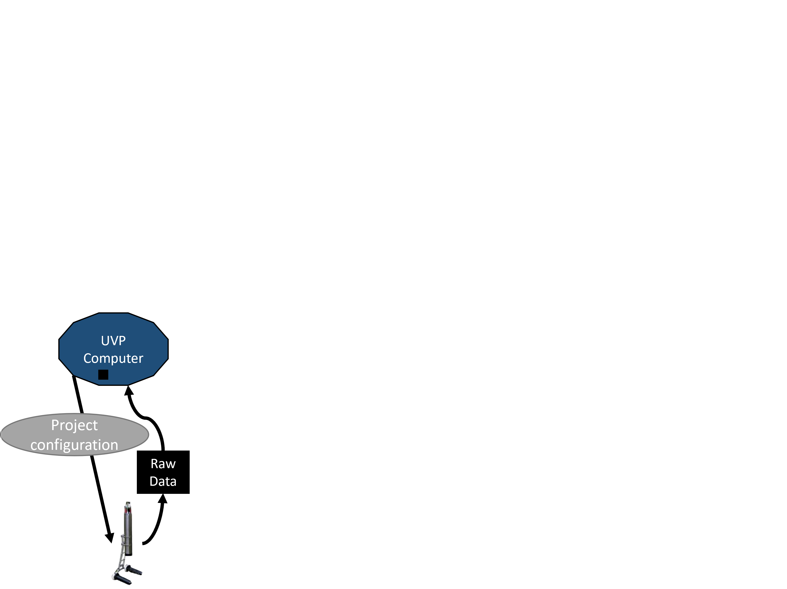
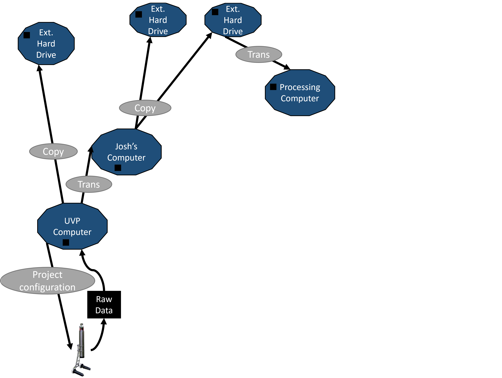
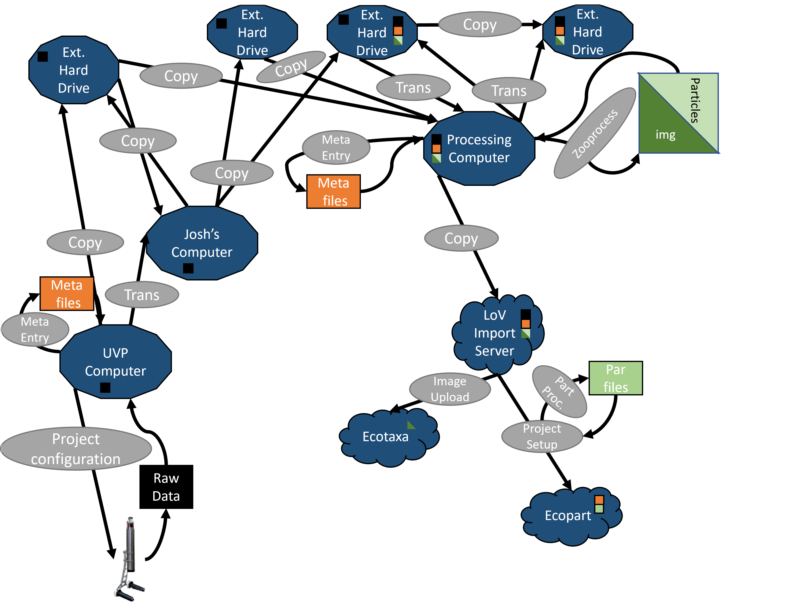
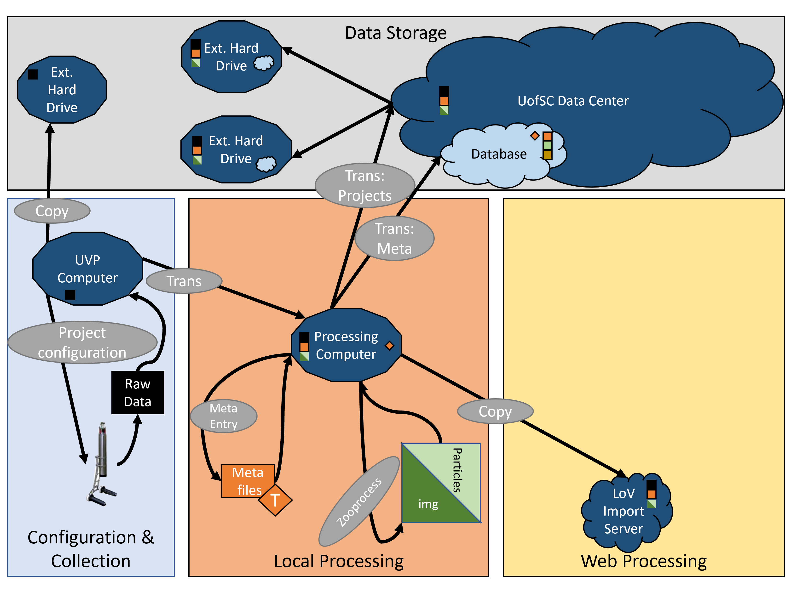
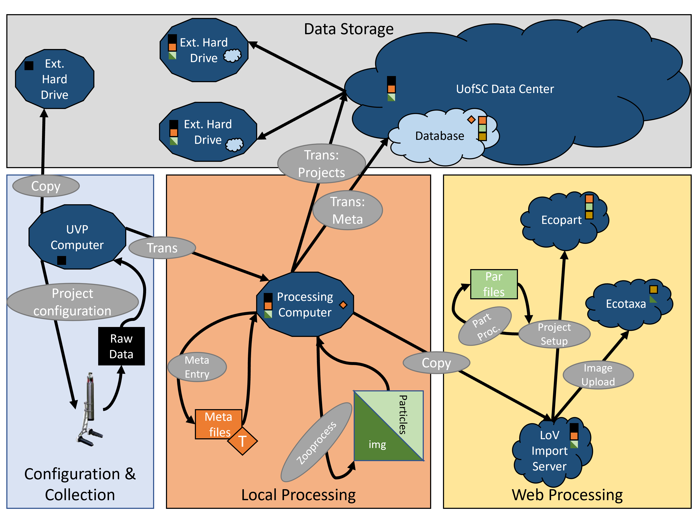
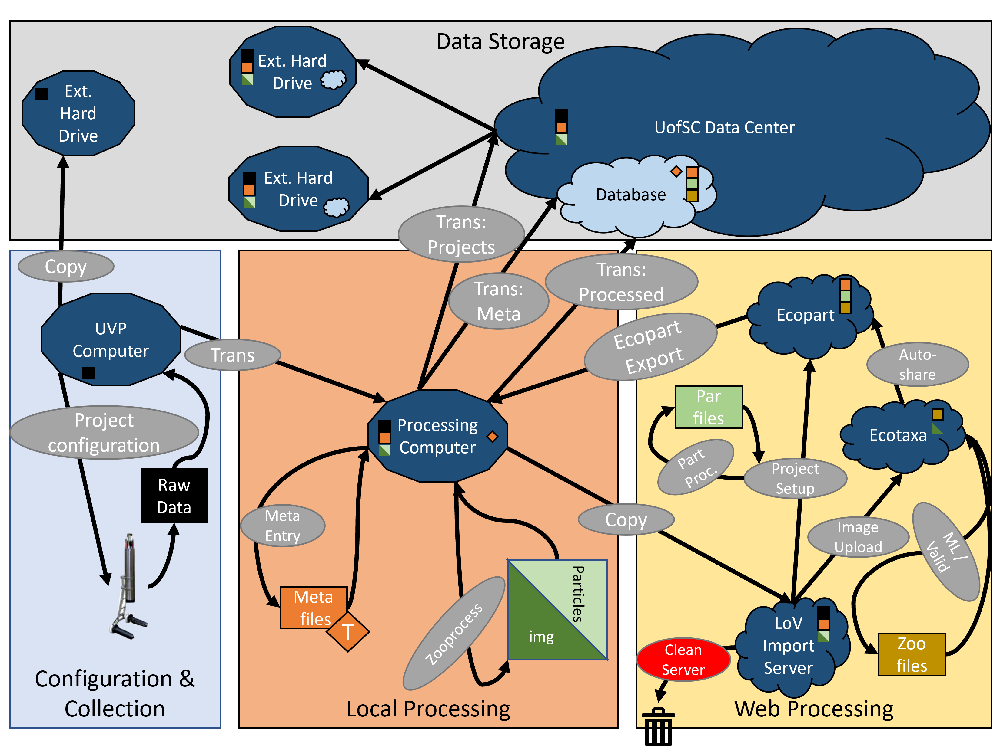

UVP Data Management Plan
Alex Barth
Currently, there is no coherent data plan. This results in a mess of data storage and access issues.
Click down to see our current pathways
A project gets set-up. With variable formats

Then the UVP collects raw data
This data gets backed up and transferred.

Data are again backed-up and sent to processing
Meta-data and processing generates new files.

However, the pathway to this point can be variable.

This results in inconsistent, messy data.
Regardless of transfer pathway, once processed, data are sent to LoV Server.
Importing creates two, related projects.
Validated vignettes are accessible in ecopart

Exported data are then sent somewhere to be analyzed or saved.

This is a mess!
Ultimately, we end up with useless (not safe) redundancy and difficulty tracking projects. We need a new method. It must store data safely but also be consistent and comprehenable to ourselves.
A new way forward:
By laying out a clear data management procedures, we can create a robust system. We'll spend less time checking back over old notes, less time explaining to new students, and more time being biologists!
Click down to see the plan:
UVP data management is 4 fundamental categories:

UVP data management is 4 fundamental categories:
Project configuration:

All projects should follow a consistent configuration. A copy of raw projects should be stored on a 'bombdrive'.
Data transefer:

Data can be directly transefered and processed on the processing computer.
Post-processing transefer:
Finished projects will be copied to the LoV server and then transefered to back-up.
Web-Processing:
Ecopart and Ecotaxa processing can follow the same protocols, with a corresponding project for each.
Web-Processing:
Sorting and classification in Ecotaxa will be readily available to the Ecopart app.
Final Products:
Data can then be exported to the processing computer and backed-up to the data-center.
Final Plan:
See the full user guide for information and details. Importantly, note we deleted old projects off the LoV server to reduce storeage.